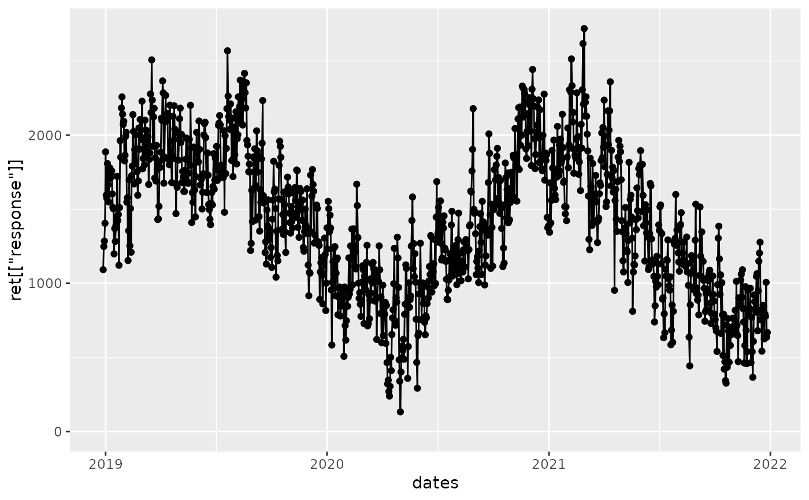
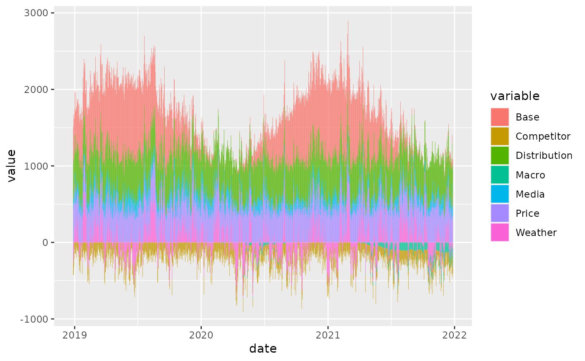

Generate a marketing mix modeling data set
generateRetailData.RdThis function generates a marketing mix modeling data set based on the parameters given for a Retail case with Revenue as it's response. It uses many different stochastical processes to accomplish this and the dynamics behind them are not available to the user to manipulate.
Usage
generateRetailData(
fromDate = Sys.Date() - 3 * 365,
toDate = Sys.Date(),
kpi = "units",
sector = "retail",
onlineInsertionNames = c("display", "facebook", "search_branded"),
offlineInsertionNames = c("tv", "radio", "ooh", "print"),
priceNames = c("price_product_a", "price_product_b", "price_product_c"),
distributionNames = c("dist_product_a", "dist_product_b", "dist_product_c"),
weatherNames = c("sunshine", "precipitation", "temperature"),
competitorNames = c("competitor_a", "competitor_b", "competitor_c"),
macroNames = c("cpi", "cci", "gdp"),
eventNames = c("event_a", "event_b")
)Arguments
- fromDate
the beginning of the time series
- toDate
the end of the time series
- kpi
the name of the kpi (response) to simulate
- sector
the name of the sector to simulate (currently not used)
- onlineInsertionNames
the names of each online media insertion you wish to use
- offlineInsertionNames
the names of each offline media insertion you wish to use
- priceNames
the names of the different product prices
- distributionNames
the names of the different product distributions
- weatherNames
the names of the weather data measurements to use
- competitorNames
the names of each competitor considered
- macroNames
the names of the macroeconomical factors to simulate
- eventNames
the names of events to add
Examples
library(ggplot2)
library(nord)
ret <- generateRetailData()
#> Joining, by = "date"
#> Joining, by = "date"
#> Joining, by = "date"
#> New names:
#> * product_a -> product_a...7
#> * product_b -> product_b...8
#> * product_c -> product_c...9
#> * product_a -> product_a...10
#> * product_b -> product_b...11
#> * ...
dates <- ret[["covariates"]][["Macro"]][["date"]]
qplot(dates, ret[["response"]]) + geom_line() + ylim(0, NA)

# entrytocolname <- function(x) a <- ret[["effects"]][[x]] %>% setNames(c(tolower(paste0(x, "_", names(.)))))
entrytocolname <- function(x) tibble::tibble(rowSums(ret[["effects"]][[x]])) %>% setNames(x)
Reduce(dplyr::bind_cols, lapply(names(ret[["effects"]]), entrytocolname)) %>%
dplyr::mutate(date = dates) %>%
tidyr::pivot_longer(-date, names_to = "variable", values_to = "value") %>%
ggplot2::ggplot(ggplot2::aes(x = date, y = value, fill = variable)) +
ggplot2::geom_bar(stat = "identity")
